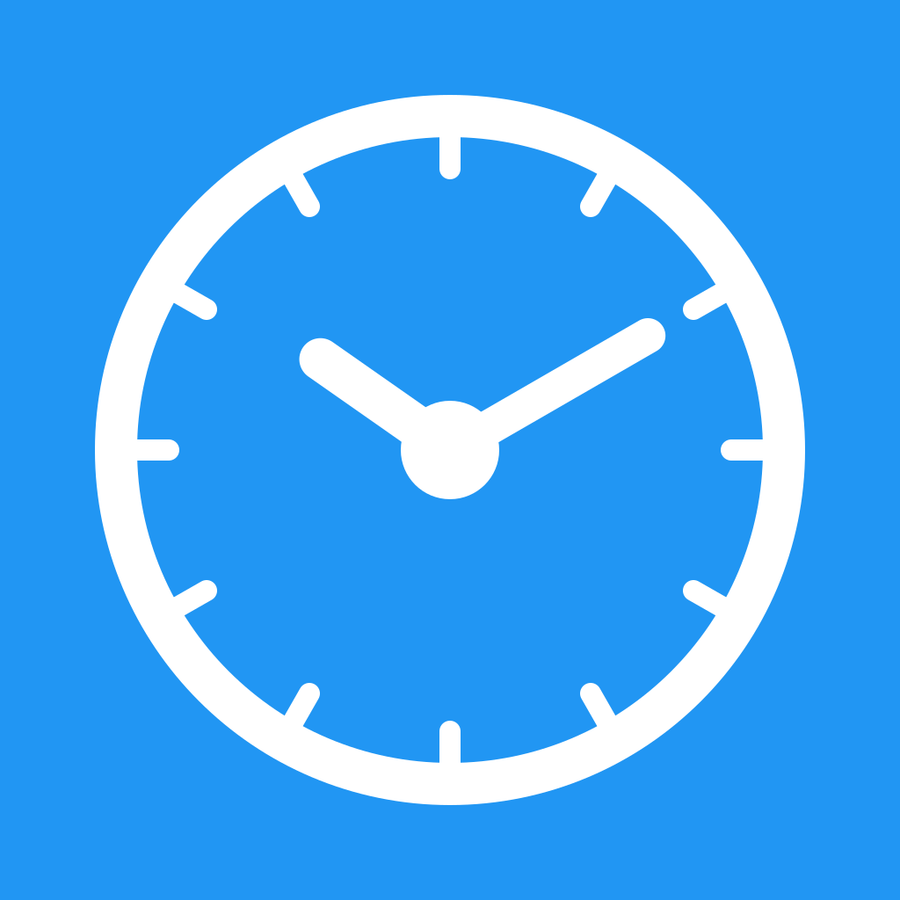
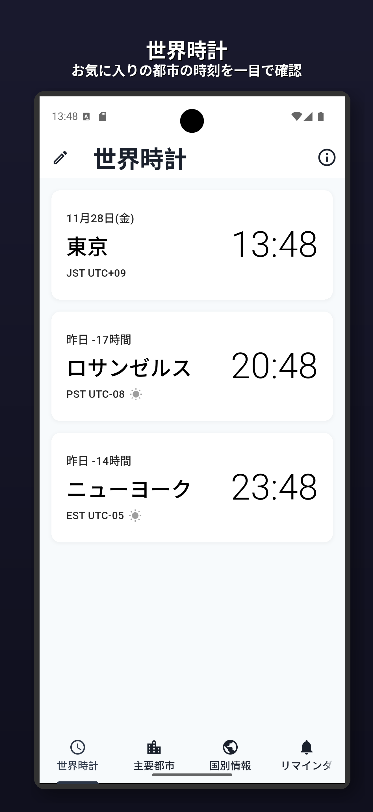
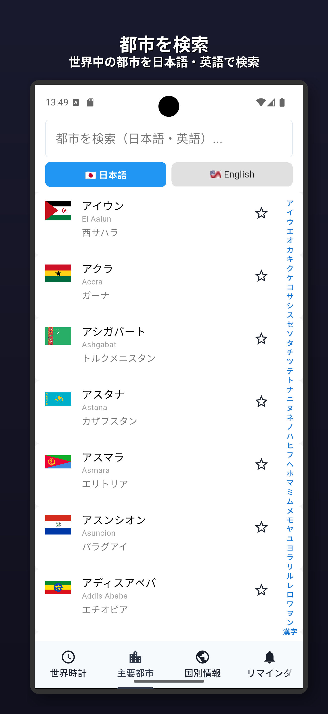
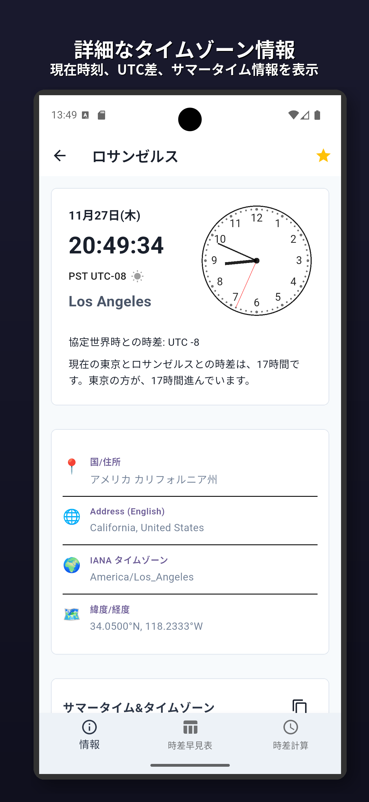
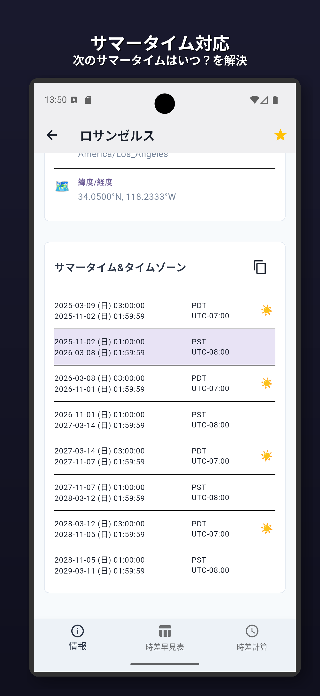
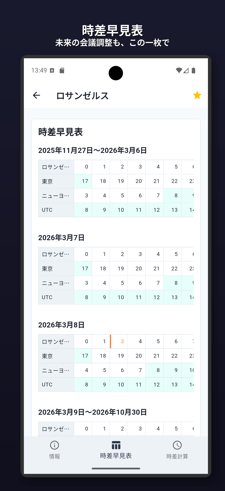
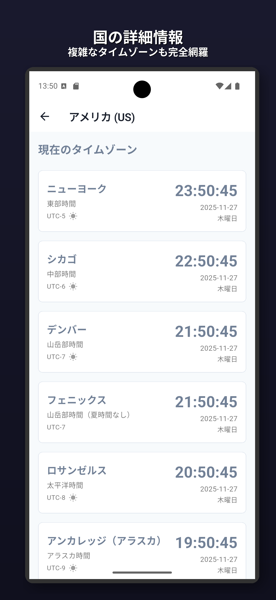
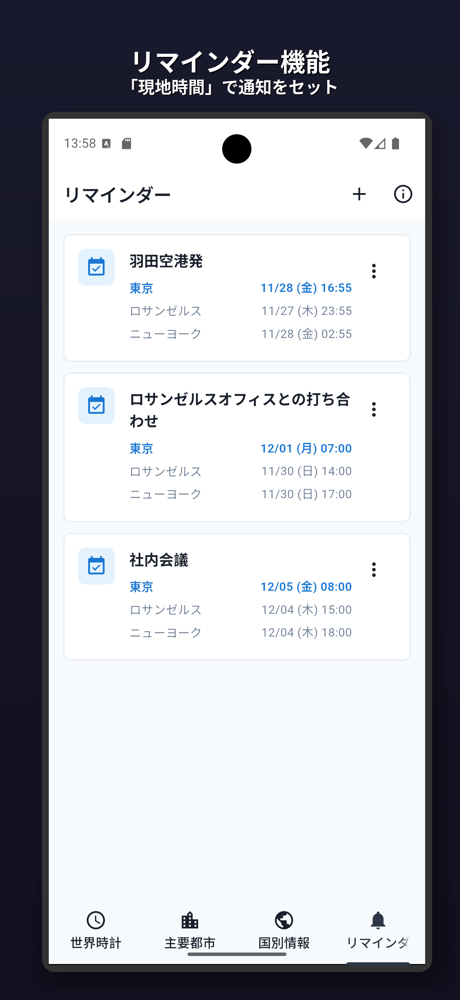
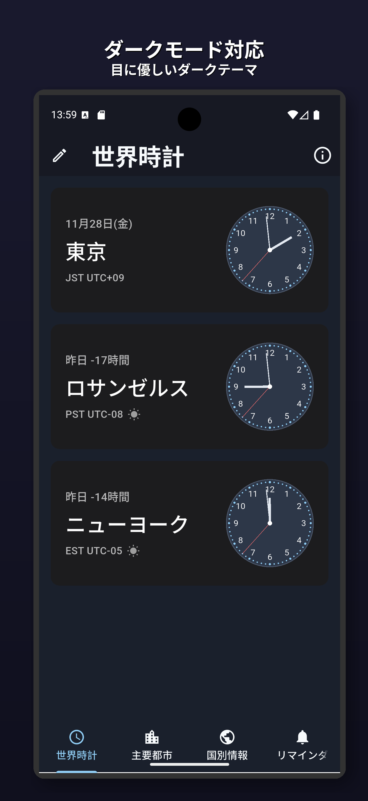

世界時計
お気に入りの都市の時刻を一目で確認

世界中の都市を日本語・英語で検索

現在時刻、UTC差、サマータイム情報を表示

次のサマータイムはいつ？を解決

未来の会議調整も、この一枚で

複雑なタイムゾーンも完全網羅

「現地時間」で通知をセット

目に優しいダークテーマ
お気に入りの都市を登録して、複数のタイムゾーンを一画面で確認。ビジネスや旅行の予定管理に最適です。
異なるタイムゾーン間の時刻を簡単に計算。国際会議やオンラインミーティングの時間調整に便利です。
複数の都市の時刻を同時に表示するリマインダー機能。世界中のチームメンバーとの予定管理に役立ちます。
24時間の時差を視覚的に表示。ビジネスアワーやサマータイム切り替えも一目で確認できます。
ライトモードとダークモードに対応。目に優しく、どんな環境でも快適に利用できます。
iOS、Android、デスクトップ（Windows、macOS、Linux）で利用可能。どのデバイスでも同じ操作感で使えます。
本アプリは完全にオフラインで動作し、個人情報や利用状況データを外部サーバーに送信することは一切ありません。 すべてのデータは端末内にのみ保存され、広告表示や利用状況の解析も行いません。 安心して世界時計機能をご利用いただけます。